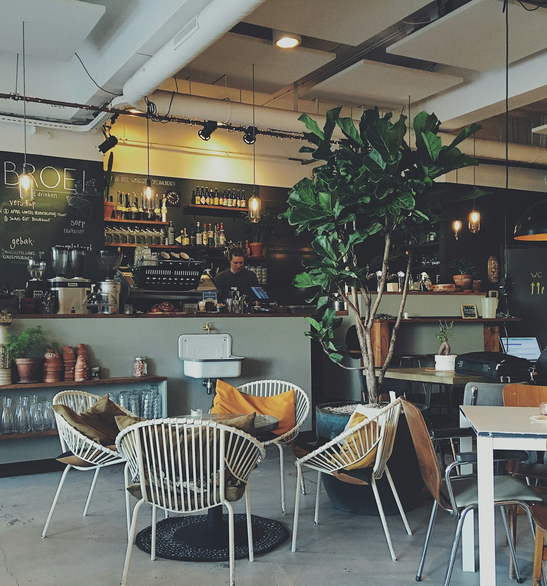

YOUR EVERYDAY RETREAT
緑と、
ひと息。
忙しい毎日に、ちいさな余白を。
一杯のコーヒーと、季節のおいしさが
あなたをお待ちしています。
OPEN
10:00 — 18:00水曜定休

a little pause, a little green.01 / ABOUT US日常に、
日常に、
やさしい時間を。
いつもの街で、
お気に入りの居場所を。
CAFE GREENは、緑とやわらかな光に包まれる街角のカフェ。
香り豊かなコーヒー、季節の食材を使ったごはん、
手づくりのスイーツをご用意しています。
本を開いたり、友人と話したり、ただ窓の外を眺めたり。
思い思いの時間を、どうぞゆっくりお過ごしください。
一杯ずつ丁寧に。ひと皿ずつ、心を込めて。
03 / VISIT USふらっと、
ふらっと、
寄り道しませんか。
街の喧騒から、少しだけ離れて。
いつもの席で、お待ちしています。
- 営業時間
- 10:00 — 18:00ラストオーダー 17:30
- 定休日
- 毎週水曜日
- 住所
- 〒000-0000
みどり市若葉町1-2-3グリーンテラス 1F（架空の住所） - アクセス
- みどり線「若葉駅」南口より徒歩5分駅を出て並木通りを直進。公園の向かいです。
WAKABA / MIDORI CITY駅から徒歩5分
こちらは制作練習用の架空の案内図です。
04 / GET IN TOUCH気になること、
フォームの内容は送信・保存されません。
気になること、
お聞かせください。
メニューのこと、ご来店のこと。
どうぞお気軽にお問い合わせください。
フォームの内容は送信・保存されません。
お問い合わせ 入力フォームへ進む